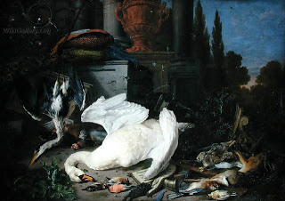

Zevachim 65 - The Logic of Bird Offering
How do we know the laws of bird offerings? The Torah said, " And the Kohen shall bring it to the Altar ." Since it says, "from turtledoves or young pigeons," you might think that only two birds are valid - the word "it" teaches that even one bird is acceptable.
The word "Kohen" teaches that only a Kohen can do the killing of the bird (melikah). For you might think that since for animal offerings anybody can do the slaughter, it should also be true for birds - the word "Kohen" dispels this notion. Rabbi Akiva says, "Would it enter your mind that a non-Kohen can approach the Altar? Rather, you might think that the melikah is done with the knife. The word 'Kohen' teaches that it has to be done with the very body of the Kohen, that is, with his nail."
Why is the melikah done from the nape? For sin-offering it says, "and he shall perform the melikah on its head opposite the back," and for burnt-offerings we learn it by the method of the "same word" - "separate," which is used in both contexts.
Art: Pieter Gysels - Still Life with Dead Birds